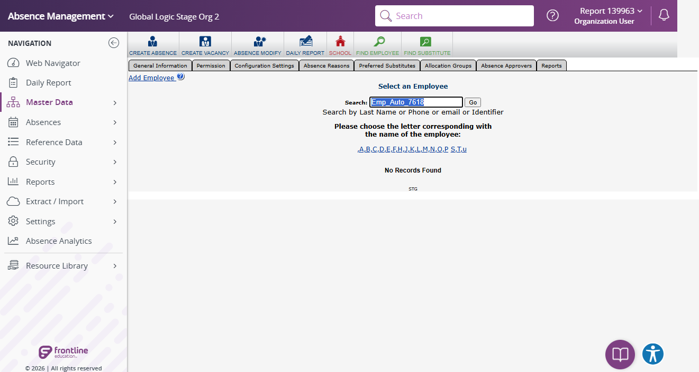

Execution 12 · Delete Synthetic Employee
tests/employee/delete-employee.md · Video 12:53–13:13
12
Execution
12:53–13:13
Continuous-video range
Unattended safe mode
Execution mode
Scenario outcome
Exact synthetic Employee lookup returned No Records Found. No target existed because safe-mode creation was skipped, and no Remove or confirmation action was attempted.
Continuous video evidence
Screenshot evidence
{kind=link}

Complete test structure
Source: tests/employee/delete-employee.md
# Delete Employee ## Full-suite execution mode When this scenario is executed by `instructions/full-suite-headed-video-execution.md`, follow the coordinator's selected mode: - **Unattended safe mode:** locate and reverify only the exact synthetic target, confirm the Remove control is available, do not open or accept the deletion dialog, and mark deletion/post-deletion checks **NOT TESTED — unattended safe mode**. - **Full destructive mode:** delete only the exact synthetic record created by the current suite. Permanent browser deletion may require a narrow action-time confirmation; do not bypass it. The coordinator should group exact cleanup targets when possible. ## Execution directive Before any browser action, read: 1. `instructions/project-instructions.md` 2. `instructions/application-details.md` 3. `instructions/test-data.md` Execute this scenario directly with Playwright MCP. Do not generate test code. Save the execution report under `reports/`. ## Objective Delete only the synthetic employee identified by the resolved Employee ID and verify it is no longer present. ## Preconditions - All required placeholders in the shared files are resolved. - The executor is authenticated with permission to delete employees. - The resolved Employee ID belongs to synthetic test data created for this project. ## Steps 1. Open the configured employee area. - Expected: The configured employee-page identifier is visible. 2. Search for the exact resolved Employee ID. - Expected: Exactly one matching employee is found. 3. Compare its Employee ID, name, and email with the expected synthetic data. - Expected: All identifying values match. If not, stop without deleting anything. 4. In full destructive mode, select the visible delete control for that record. In unattended safe mode, verify the control is available but do not select it. - Expected: A confirmation dialog identifies the same employee. 5. In full destructive mode, confirm deletion once after any required action-time authorization. In unattended safe mode, mark this step **NOT TESTED**. - Expected: A deletion success message or return to the employee list appears. 6. Search again for the exact Employee ID. - Expected: No matching employee is present. ## Cleanup If deletion fails or cannot be verified, mark the scenario FAIL or BLOCKED and state that manual cleanup may be required.
Safety and cleanup
No password, token, cookie, or authentication fragment is included. Unattended safe mode did not create, update, or delete persistent staging records.